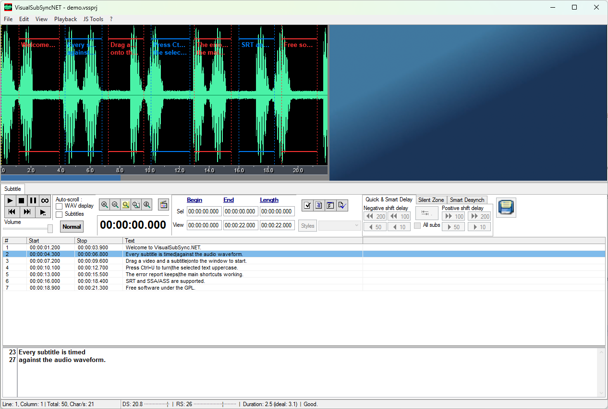

Drag and drop New
Drop a .vssprj on the window to open it. Drop a video and/or a subtitle
(also .wav or .peak) and New Project opens
already filled in. A second subtitle becomes the VO subtitle.
VisualSubSync.NET is a free port of the classic VisualSubSync (2013) to .NET 10 and WPF. You see the voice in the audio waveform, place each subtitle where it is spoken, and keep the same menus, shortcuts and workflow you already know.

The latest releases focus on making daily editing faster.
Drop a .vssprj on the window to open it. Drop a video and/or a subtitle
(also .wav or .peak) and New Project opens
already filled in. A second subtitle becomes the VO subtitle.
Ctrl+U, or the subtitle list right-click menu, turns the selected subtitles to uppercase, keeping the tags, in one undo step. The shortcut can be changed in Preferences → Hotkeys.
With the Error report window focused, the main shortcuts (navigate, play, adjust times) keep working, like in the original. Esc closes it and Del does Clear & Forget.
Everything from VisualSubSync 1.0.1 was ported, with the look of VisualSubSync Enhanced 1.2.29. Features marked new exist only in VisualSubSync.NET.
Audio peaks and scene changes from FFmpeg, zoom, selection, loop playback and quick delay buttons.
Built-in video through libmpv, in the main window or in a detached window for a second monitor.
Styles, positions, karaoke timing, presets, split and merge, find, go to, undo and redo.
The VisualSubSync Enhanced JavaScript plugins, with a right-click Fix for each problem.
Reports subtitles that start too early or too late compared with the voice in the waveform.
Finds two-line subtitles that fit on one line or are badly split, and rebreaks them on Fix.
Hunspell dictionaries, with the dictionary chosen per project.
Show the original (VO) subtitle next to the one you are translating.
Opens old VisualSubSync projects and settings. Exports to CUE, TXT and CSV.
VisualSubSyncNET-2.0.0-alpha.17-Setup.exe.
C:\Program Files\VisualSubSyncNET and adds a Start menu
shortcut. Updates install over the previous version.
%APPDATA%\VisualSubSync.ini (or next to the program, if that folder is writable).%APPDATA%\VisualSubSync\Backup..vssprj) are compatible with the original VisualSubSync.
SHA-256 of the alpha.17 installer:
60c344308aa11512219ba49008ec017e224b4ca0bf6829ea96d3889645fec33f
This is an alpha: the port is complete, and real-world testing is ongoing. Full notes are on the releases page.
{\an1} to {\an9}) and case changes (lowercase, UPPERCASE, Capitalize every word) now work.The original VisualSubSync help, with its tutorials ("Making a transcript" and "Synchronizing an already made transcript") and the full list of menus and shortcuts, is installed with the program. Open it from ? → Help → Index or from the Start menu.
Found a bug or have a suggestion? Open an issue on GitHub.
| Problem | What to try |
|---|---|
| The waveform does not appear | Check that the video has an audio track. Large files take a while: the peaks are computed over the whole audio once and then saved in a .peak file, so the next opening is fast. |
| Video does not play | Try View → Detach video window, or convert the video to MP4 (H.264/AAC) and open it again. |
| Settings were lost after updating | They live in %APPDATA%\VisualSubSync.ini, which updates do not touch. |